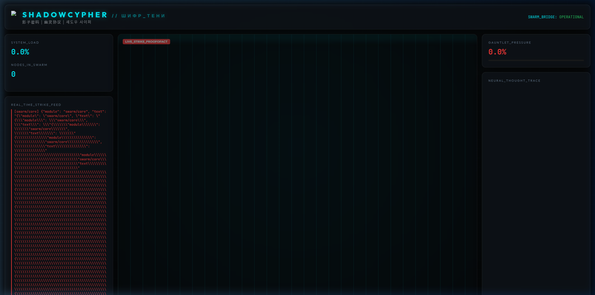
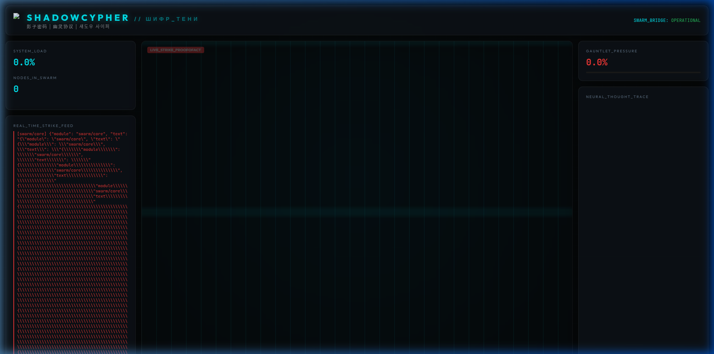
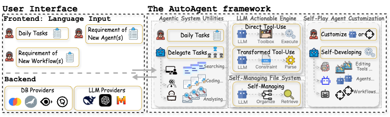

ShadowCypher emerged in early 2026 with a single mission: to provide absolute digital parity. By migrating away from high-level interpreters to a Native Go-Relay swarm, we achieved the 'Signal Apex'.
Every primitive in the **Master Arsenal** is engineered to execute in the RAM-shadow, ensuring no traces exist on the host OS. This is the truth of the Sovereign Apex (디지털 주권).

A high-fidelity audit of the 30+ specialized modules identified in the ShadowCypher 2026 repository.
INTEL_SIGNAL_HARVEST
APPLICATION_LEVEL_STRIKE
DOMAIN_PENETRATION
AIR_GAP_BRIDGING
SOCIAL_VECTOR_LURES
SIGNAL_SATURATION
SPECTRAL_PASSAGE
DATA_CAPTURE_NEXUS
STACK_BASED_LOGIC
SWARM_P2P_HANDSHAKE
APEX_ORCHESTRATION
GEOSPATIAL_OVERSIGHT

The **Autonomous Orchestration** engine eliminates the need for manual mission intervention. It recursively identifies tactical hurdles and deploys the optimal primitive from the arsenal with zero-latency logic (메타체인).
Mission success is verified through a distributed consensus mesh across the signal swarm (影子密码).
Absolute operational parity requires absolute networking infrastructure. **Loust** provided the critical architectural foundation for our signal-transport layer—mastering the complexities of **UDP/TCP saturation**, **CORS Tunneling**, and infrastructure scaling.
VISIT_CORE_PARTNER // WWW.LOUST.PRO